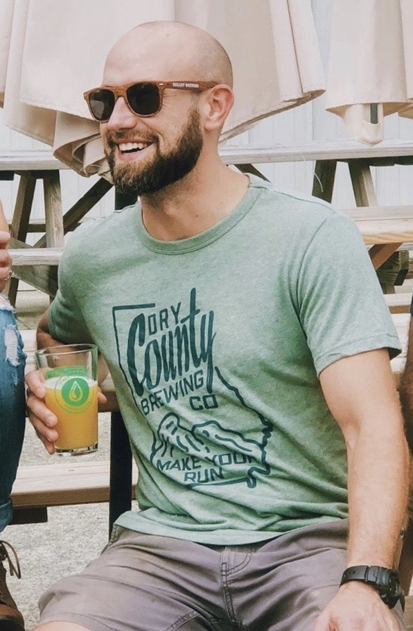

About
Full-Stack Developer {MERN} / Brewer
Having just finished Georgia Institute of Technology's Program to become a Full-Stack Developer, I am actively seeking a development role where I can apply the vast knowledge and technical efficiency I've acquired.
Over the last six years I've been working as a Head Brewer in the craft beer industry, aspiring to open my own brewery. While the profession had it's perks, my career goals were never fully satisfied. I always wanted more: to be challenged more, to earn more and to create more.
The decision to change professions and enter this new career field was not made lightly. Fully knowing the transition would not be easy, I decided to dive in head first, enrolling in an intensive 26 week program to become certified as a Full-Stack Developer, which felt comparable to compressing 20 years of software programming into 6 months.
I'm looking for a team that can utilize and assist in further developing my MERN stack skills and explore new technologies as well.
While not coding or brewing, I'm usually spending time at home or hiking nearby with my wife, 4 year old daughter and newborn son.
